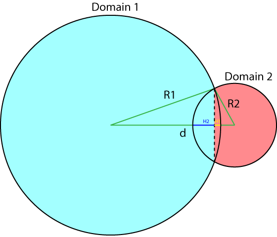
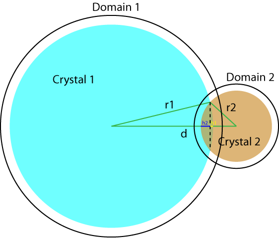
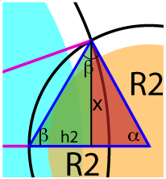

If Impingement Correction is chosen, then a routine (CorrectForImpingment) nudges up the radius and extended volume for a crystal to compensate for impingement. That will only occur for datasets that seem to be from Crystallize (as indicated by text in the comment line). The reason for this is that Crystallize doesn't address impingement at all, really, but merely takes the calculated domain volumes (red and blue in the figure at left)
and multiplies them by the user-selected volume fraction, producing erroneously small radii when the crystals impinge. This is because it doesn't know that the crystals will, in fact, overlap. When the domains intersect but the crystals don't overlap, then the Crystallize algorithm works fine. When the crystals overlap, then the overlapped volume gets counted once and needs to be counted twice. To remedy this, that extra volume gets added onto the crystal. Some of that added volume (in the form of the "extended volume" and the radius) will also be impinged or overlapping with other crystals, and thus even more needs to be added on. This is an interative process.
Here's some of the relevant math:
If we presume two spherical domains of radius R1 and R2 with the centers separated by distance d, then domain 1 has a spherical cap volume CAP1 given by: CAP1 = π*H12*(3*R1-H1)/3, where H1 is the "height" of the cap and is given by:
H1 = R1 * (1 - (R12 + d2 - R22) / (2 * R1 * d) ).
The derivation for this (using domain 2) uses triangle construction in the close-up at right:
The volume of the domain 1 that Crystallize actually knows about is given by V1' = V1-CAP1, and the volume of crystal 1 in domain 1 is given by v1 = V1' * VF (where VF = volume fraction). The radius recorded by Crystallize is merely r1 = (3 * v1 / (4 * pi))1/3. The true volume of the two domains is JDV = V1' + V2', and the ideal joint volume of the two crystals would be v1 + v2. However, if these crystals overlap, then some of that joint volume will not be realized because the overlapped volume cannot be counted for both crystals. Thus, we add the overlapped volume back onto each crystal. Of course, some of the added volume will also be overlapping, and thus we iterate (making this routine perhaps take a while) until the percentage error is less than the global variable volumeErrorTolerance.